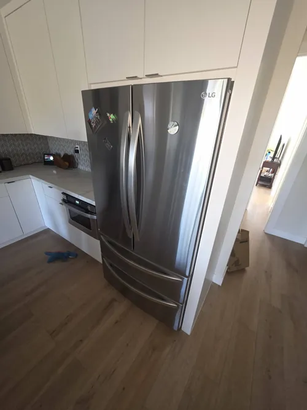

LG Refrigerator Repair: Why Your Ice Maker Is Not Working
Few refrigerator problems are more frustrating than an ice maker that suddenly stops producing ice. Many homeowners do not realize how many different systems work together to support proper ice production inside a modern refrigerator. Water supply components, temperature sensors, cooling systems, control boards, fans, and electronic communication systems all play important roles in the ice making process. When one of these components develops a problem, ice production may slow down, become inconsistent, or stop completely.
Modern LG refrigerators use advanced technology to monitor temperatures and control ice production automatically. Because multiple systems operate together, diagnosing ice maker problems often requires more than simply replacing a single component. Professional LG refrigerator repair focuses on identifying the root cause of the failure and restoring reliable refrigerator performance.
One of the most common causes of ice maker problems is a restricted water supply. If the refrigerator is not receiving adequate water flow, ice production may slow significantly or stop entirely. Water supply issues can be caused by clogged filters, partially closed shut off valves, kinked water lines, or failing water inlet valves. Reduced water pressure often affects both ice makers and water dispensers.

Temperature problems are another frequent cause of poor ice production. Ice makers depend on consistent freezer temperatures to operate properly. If the freezer compartment becomes too warm, the ice maker may stop producing ice altogether. Cooling issues can result from airflow restrictions, evaporator fan failures, frost buildup, compressor related problems, or sensor malfunctions. In many cases, homeowners initially assume the ice maker has failed when the actual problem originates within the refrigerator cooling system.
Frozen water supply tubes can also interrupt normal ice production. Water travels through small fill tubes before reaching the ice maker assembly. If temperatures become unstable or airflow problems develop, these tubes may freeze and block water delivery. The ice maker itself may continue attempting to operate even though no water reaches the ice tray.
Many newer LG refrigerators utilize sophisticated electronic controls that regulate ice production. Control boards communicate with sensors, water valves, and cooling systems to coordinate proper operation. If a control board begins malfunctioning, the refrigerator may experience intermittent ice production, error messages, or complete ice maker failure. Accurate diagnostics are essential because electronic problems can create symptoms that closely resemble mechanical failures.
Ice maker sensors also play an important role in modern refrigerator operation. These sensors monitor ice levels, temperature conditions, and system performance. A faulty sensor may incorrectly signal that the ice bin is full or that operating conditions are unsuitable for ice production. As a result, the refrigerator may stop making ice even though no visible problem exists.
Another common issue involves excessive frost buildup inside the freezer compartment. Frost accumulation can restrict airflow and interfere with temperature regulation, both of which directly affect ice production. Defrost system problems, damaged door gaskets, or prolonged door openings may contribute to frost related issues that eventually impact the ice maker.
Homeowners sometimes notice that ice cubes become smaller than normal before ice production stops completely. This often serves as an early warning sign of water supply restrictions, filter problems, or declining water pressure. Addressing these symptoms early can help prevent larger refrigerator issues and restore proper ice maker performance more quickly.
Smart refrigerators may also generate diagnostic codes related to ice maker operation. These alerts can provide valuable information about communication errors, sensor problems, water supply issues, or cooling system failures. Professional LG refrigerator repair technicians use diagnostic procedures to interpret these symptoms accurately and identify the source of the problem.
Preventive maintenance can help reduce the likelihood of future ice maker failures. Replacing water filters regularly, maintaining proper freezer temperatures, inspecting water supply lines, and addressing cooling problems early all contribute to reliable ice production. Routine maintenance also helps protect related refrigerator components from unnecessary wear.
Because ice maker problems can originate from multiple refrigerator systems, accurate diagnosis is often the most important step in the repair process. Professional LG refrigerator repair helps identify the true source of the failure while restoring dependable ice production and overall refrigerator performance. Whether your ice maker has stopped completely, produces ice slowly, or creates inconsistent results, proper diagnostics can help return your refrigerator to normal operation and improve long term reliability.